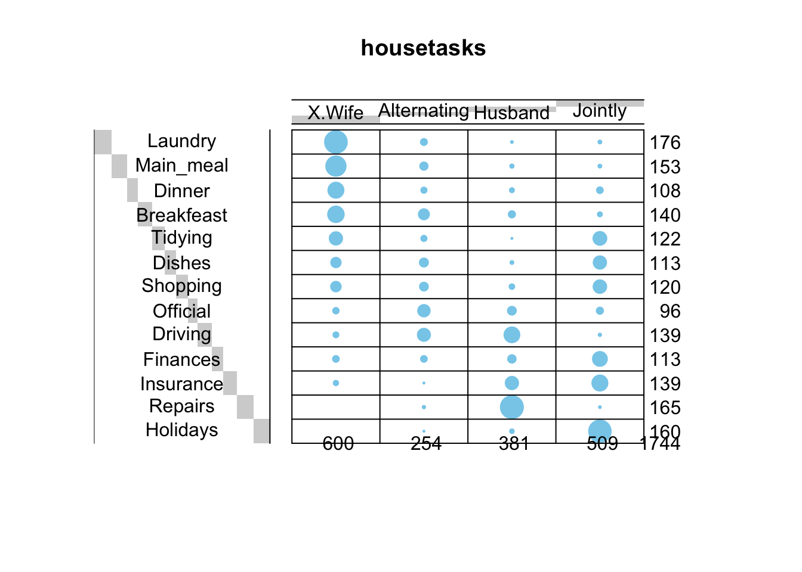
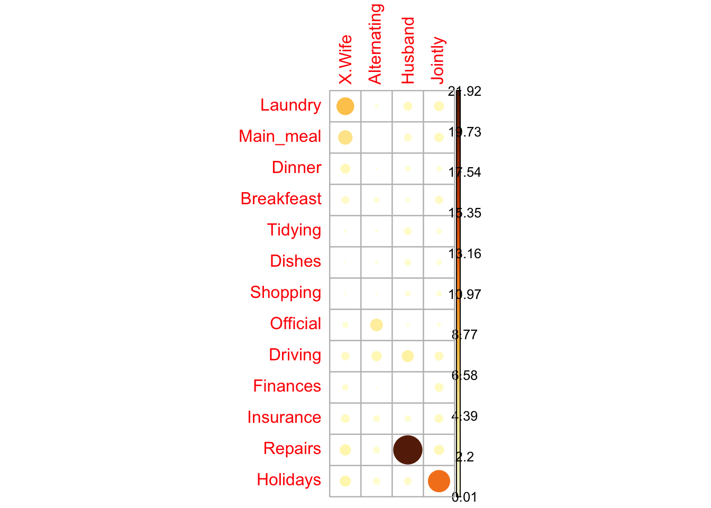

20 Chi-Square Test of Independence
20.1 What is a Chi-Square Test of Independence?
The Chi-Square Test of Independence is used to determine if there is a significant association between two categorical variables.
Purpose: The test assesses whether the observed frequencies in a contingency table differ from the frequencies expected under the assumption of independence.
What Does This Mean!?!?
Observed Frequencies: This refers to actual counts or numbers recorded in each cell of the contingency table.
Example: In a survey, 20 males preferred Product A, 30 males preferred Product B, 25 females preferred Product A, and 25 females preferred Product B.
These counts would be expected in each cell if the two variables were completely independent of each other.
Contingency Table: A contingency table displays the frequency distribution of variables in a matrix format, showing the observed counts of occurrences across categories of two variables.
| Preference A | Preference B | Total | |
|---|---|---|---|
| Male | 20 | 30 | 50 |
| Female | 25 | 25 | 50 |
| Total | 45 | 55 | 100 |
Expected Frequencies: These are the counts we would expect to see in each cell if the two variables were completely independent of each other. Calculated using the formula:
\[ E_{ij} = \frac{\text{RowTotal} * \text{ColumnTotal}}{\text{GrandTotal}} \]
Example: If gender and product preference are independent, the expected frequency for males preferring Product A is calculated based on the overall proportions of males and Product A preferences in the total sample.
Assumption of Independence: Under the assumption of independence, the occurrence of one variable does not affect the occurrence of the other variable.
Example: Gender has no influence on product preference, meaning the distribution of preferences should be the same for both males and females.
Comparing Observed and Expected Frequencies: The Chi-Square test compares the observed frequencies with the expected frequencies. If the observed frequencies match the expected frequencies closely, it suggests that there is independence between the variables. Significant differences between observed and expected frequencies suggest an association between the variables.
20.2 Statistic for Chi-Square test
| Preference A | Preference B | Total | |
|---|---|---|---|
| Male | 20 | 30 | 50 |
| Female | 25 | 25 | 50 |
| Total | 45 | 55 | 100 |
1. Calculate Expected Frequencies: For each cell, the expected frequency is calculated as below Example for cell (Male, Preference A): \(E_{Male,A}\) = (50×45) 100 = 22.5
2. Compute the Chi-Square Statistic: calculated using the formula:
\[ x^2 = \sum\frac{(O_{ij} - E_{ij})^2}{E_{ij}} \]
where \(O_{ij}\) is the observed frequency and \(E_{ij}\) is the expected frequency.
Sum this calculation over all cells in the table.
Determine Degrees of Freedom (df): df=(Number of Rows−1)×(Number of Columns−1)
3. Find the Critical Value and Compare:
Using the degrees of freedom and the significance level (e.g., 0.05), find the critical value from the Chi-Square distribution table.
Compare the calculated \(x^2\) to the critical value to determine whether to reject the null hypothesis.
20.3 Conducting the test
Research Question and Hypotheses The general question for a Chi-Square Test of Independence is: Is there a statistically significant association between two categorical variables?
Example questions include:
- Is there an association between gender and voting preference?
- Is there a relationship between education level and job satisfaction?
- Does the use of a new teaching method depend on the grade level of students?
Hypotheses From the research question, you derive the hypotheses:
Null Hypothesis (\(H_{0}\)): There is no association between the two categorical variables (they are independent). Alternative Hypothesis (\(H_{1}\)): There is an association between the two categorical variables (they are not independent).
Before performing the Chi-Square test, check these assumptions:
Categorical Data: Both variables should be categorical.
Independence of Observations: Each observation should contribute to only one cell in the contingency table.
Expected Frequency: Expected frequency in each cell should be at least 5 for the test to be valid.
20.4 Data format: Contingency tables
We’ll use housetasks data sets from STHDA:http://www.sthda.com/sthda/RDoc/data/housetasks.txt. link
# Import the data
# file_path <- "http://www.sthda.com/sthda/RDoc/data/housetasks.txt"
housetasks <- read.delim("../data/03_housetasks.txt", row.names = 1)
# Show top rows of data
head(housetasks) X.Wife Alternating Husband Jointly
Laundry 156 14 2 4
Main_meal 124 20 5 4
Dinner 77 11 7 13
Breakfeast 82 36 15 7
Tidying 53 11 1 57
Dishes 32 24 4 53The data is a contingency table containing 13 house tasks and their distribution in the couple:
1. by the wife only
2. alternatively
3. by the husband only
4. jointly
20.5 Graphical display of contengency tables
Contingency table can be visualized using the function balloonplot() [in gplots package]. This function draws a graphical matrix where each cell contains a dot whose size reflects the relative magnitude of the corresponding component.
# Graph of contingency table
balloonplot(
t(dt),
main ="housetasks",
xlab ="",
ylab="",
label = FALSE
) 
The size of the blue bubbles in the balloon plot represents the frequency or count of how often a specific task is performed by a particular household member or group of members. Larger bubbles indicate higher frequencies, meaning that the task is performed more often by that household member or group.
Overall Summary:
1. The Wife appears to handle the majority of routine daily tasks such as cooking, cleaning, and shopping.
2. The Husband is more involved in tasks like Repairs, Driving, and Finances.
3. Some tasks are done jointly, showing cooperation between household members for tasks like Shopping, Official duties, and Holidays.
4. Alternating responsibility is the least common method of task distribution.
Row and column sums are printed by default in the bottom and right margins, respectively. These values can be hidden using the argument show.margins = FALSE.
20.6 Compute chi-square test in R
Chi-square statistic can be easily computed using the function chisq.test() as follow:
chisq <- chisq.test(housetasks)
chisq
Pearson's Chi-squared test
data: housetasks
X-squared = 1944.5, df = 36, p-value < 2.2e-16As the results shown above, p-value < 2.2e-16, which means we can reject the null hypothesis, and saying that the row and the column variables are statistically significantly associated.
20.6.1 Nature of the dependence between the row and the column variables
If you want to know the most contributing cells to the total Chi-square score, you just have to calculate the Pearson residuals (r) for each cell (or standardized residuals).Pearson residuals can be easily extracted from the output of the function chisq.test():
Cells with the highest absolute standardized residuals contribute the most to the total Chi-square score.
Visualize Pearson residuals using the package corrplot:
# Contibution in percentage (%)
contrib <- 100*chisq$residuals^2/chisq$statistic# Visualize the contribution
corrplot(
contrib,
is.cor = FALSE
)
For a given cell, the size of the circle is proportional to the amount of the cell contribution.
It can be seen that:
1. The column “Wife” is strongly associated with Laundry, Main_meal, Dinner
2. The column “Husband” is strongly associated with the row Repairs
3. The column jointly is frequently associated with the row Holidays